Challenge 1
Nhìn hình và chọn từ/cụm từ đúng.
Người lớn: nguồn/ghi chú
1. ● → `1 / 2 / 3 / 4`
Đáp án giáo viên xem trong bài nguồn, không hiển thị trước cho bé.
Ảnh WebP nhẹ, không có nhãn đáp án trong bitmap. Câu hỏi và lựa chọn nằm riêng. Audio Challenge do chủ dự án bổ sung; hiện có thể nhờ người lớn đọc từ bài nguồn.
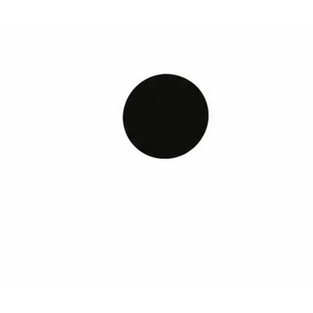
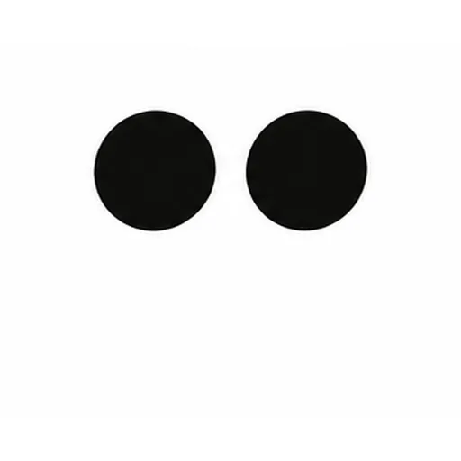
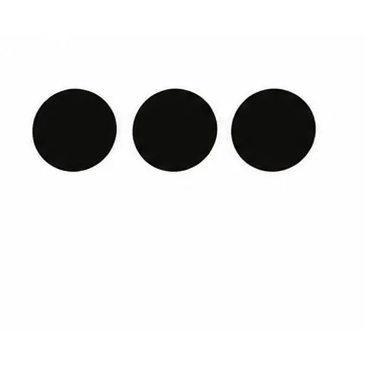
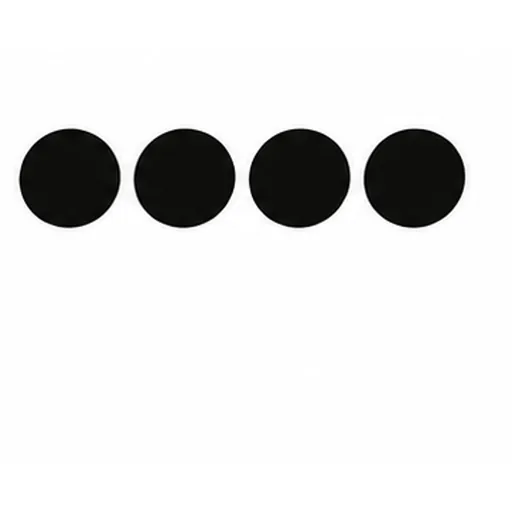
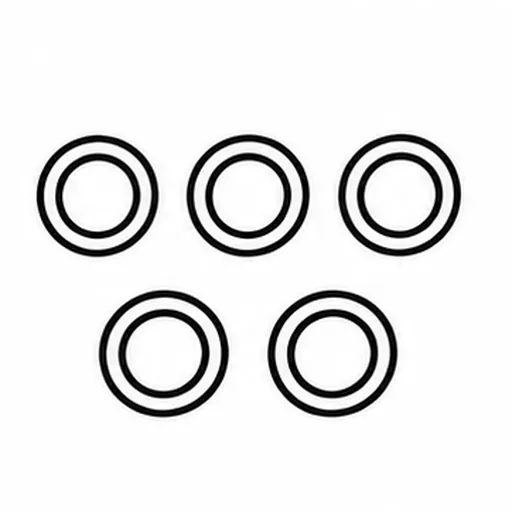
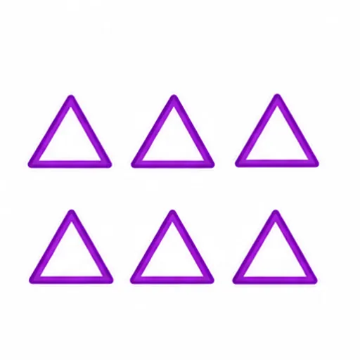
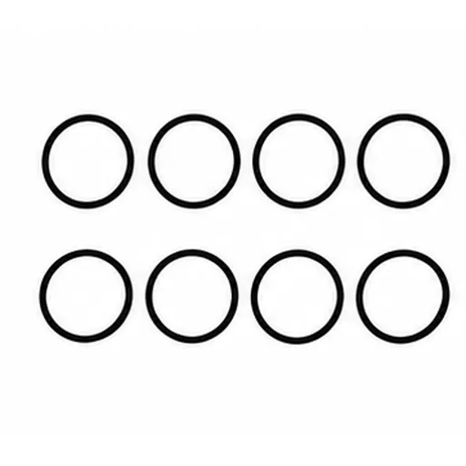
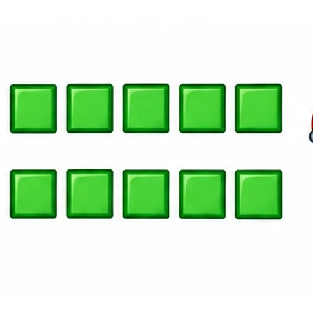
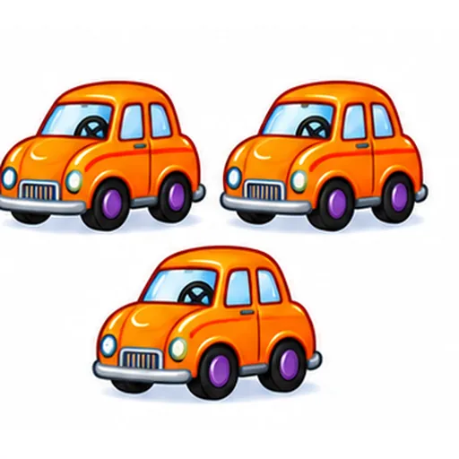
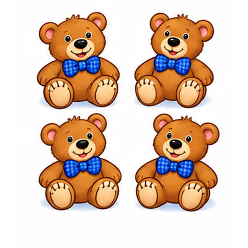
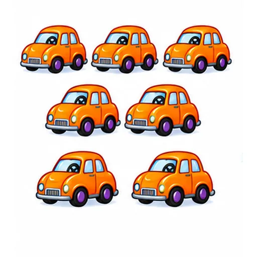
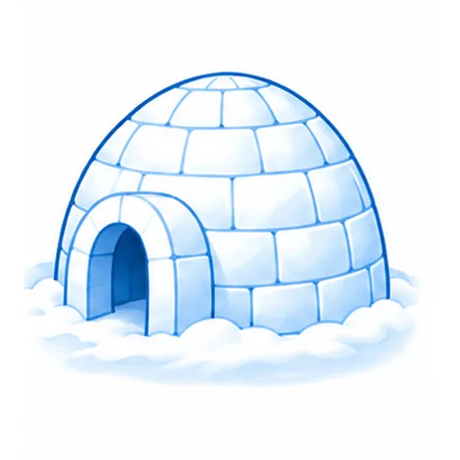
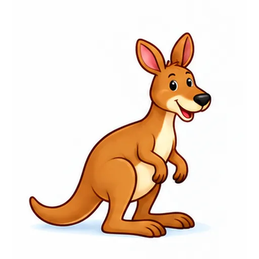
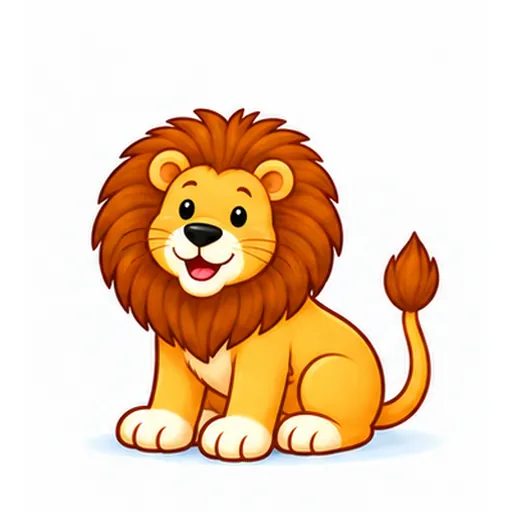
Nhìn hình và chọn từ/cụm từ đúng.
1. ● → `1 / 2 / 3 / 4`
Đáp án giáo viên xem trong bài nguồn, không hiển thị trước cho bé.
Nghe audio hoặc người lớn đọc, rồi chọn đáp án phù hợp.
### 1.1 “May I come in?”
### 1.1 “May I come in?” Người lớn chọn một nội dung hợp lệ trong bài nguồn để đọc; audio Challenge sẽ bổ sung sau.
Đáp án giáo viên xem trong bài nguồn, không hiển thị trước cho bé.
Nhìn hình. Điền hoặc nói câu trả lời của em.
1. ● ● ● → `2 / 3 / 4`
Đáp án giáo viên xem trong bài nguồn, không hiển thị trước cho bé.
- i g l _ _
- i g l _ _ *(igloo)* 🛖
Đáp án giáo viên xem trong bài nguồn, không hiển thị trước cho bé.
Nhìn hình. Nói hoặc điền câu trả lời: → ______
● → ______
Đáp án giáo viên xem trong bài nguồn, không hiển thị trước cho bé.
Nhìn hình. Nói hoặc điền câu trả lời: → ______
● ● → ______
Đáp án giáo viên xem trong bài nguồn, không hiển thị trước cho bé.
Các câu chưa có cue cố định được ghi trong mapping. Câu trả lời cá nhân không bị ép Yes/No. Toàn bộ bài luyện gốc được giữ nguyên.